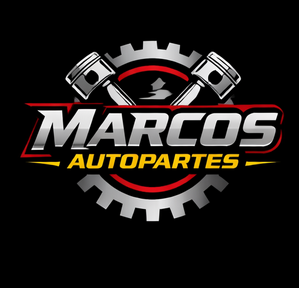
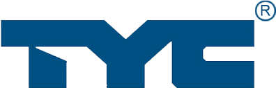
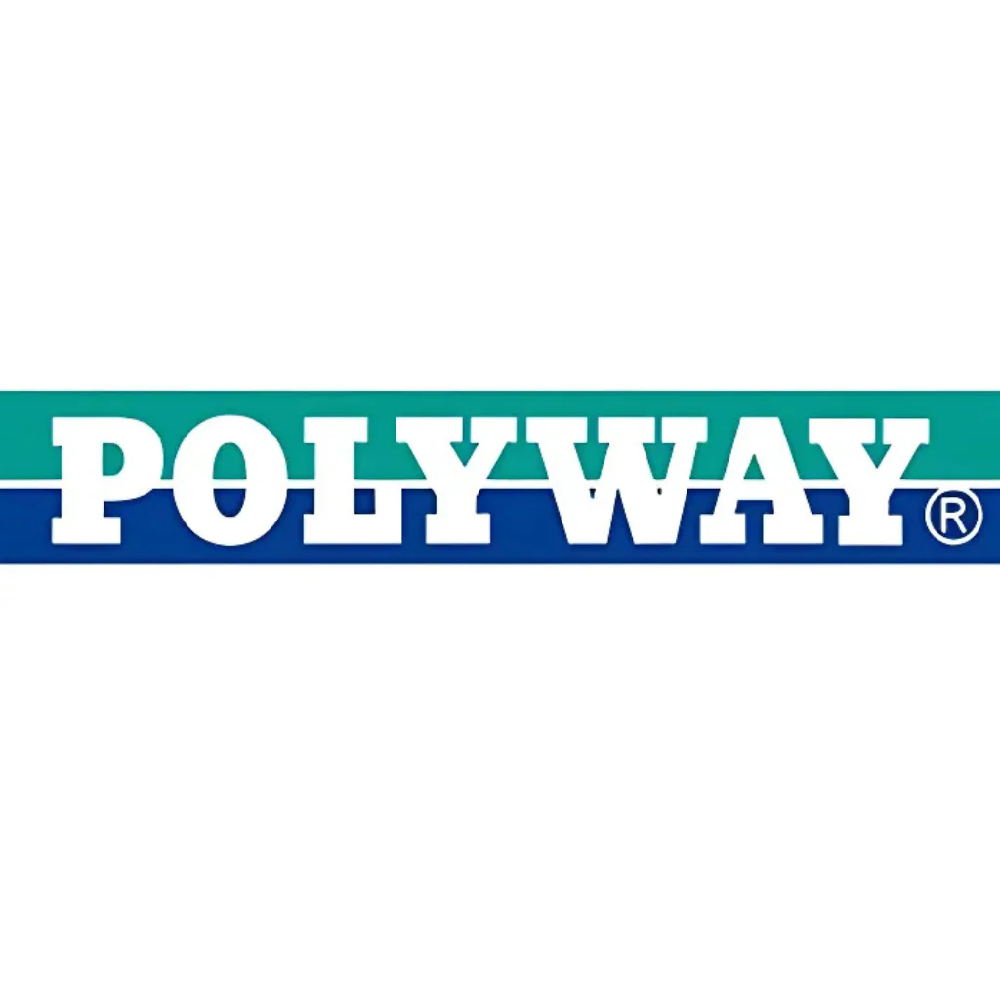

¿Quienes somos?

En Marcos Autopartes (AAU) somos una empresa 100% mexicana, líder en importación, distribución y comercialización de partes de choque para automóviles y Pick Ups.
Con más de 37 años en el mercado, ofrecemos piezas de aftermarket tanto para marcas comerciales como para coches de lujo a un precio competitivo.
Con un extenso catálogo de +30 mil artículos, nuestra política es ¡stock máximo, calidad máxima! Nos distinguimos por tener nuestros productos siempre en stock para una entrega rápida, completa y efectiva. ¡Haz la prueba! Envíos a toda la república mexicana.
Mision
Nuestra meta es fomentar una circulación segura en el tráfico de automóviles al proveer auto partes de la mayor calidad a un precio accesible.
Vision
Ampliar y mejorar constantemente nuestra oferta de productos y tecnologías, teniendo stock máximo y calidad máxima.
Valores
- Cercania
- Confianza
- Crecimiento
- Lealtad
- Respeto
PROVEEDORES PRINCIPALES
TYC Brother Industrial

Siempre centrados en crear la iluminación con la mayor tecnología y calidad, TYC trabaja directamente siendo el fabricante de PIEZAS ORIGINALES (OEM) de marcas como:
Certificaciones de planta: ISO26262, IATF16949, ISO9001, iSO45001, ISO14064, Ford Q1 y AEO.
Certificaciones de producto: CAPA, RDW, TecDoc, EAC, iCAT, IRAM, SNCH, FOCWA, TÜVRheinland.
Tong Yang Group

TONG YANG ha sido un aliado indiscutible para Marcos Autopartes. En 1981 crea la primera defensa OEM (parte original) para FORD y desde entonces no ha parado de innovar en tecnologías y materiales para la creación de piezas aftermarket de máxima calidad. Fue el primero en obtener la certificación NSF con sus molduras de defensa. En la actualidad, produce piezas OEM para marcas como Mazda, Honda, Yulon-Nissan, entre otras. Tiene la fábrica de cromo más grande del mundo, con una capacidad anual de 3.12 millones de piezas, y un premio de Comercio Internacional de Taiwán por ser "Empresa Sobresaliente en la Exportación-Importación".
Certificaciones de planta: ISO/TS 16949, ISO 14001:2015, ISO 9001:2015.
Certificaciones de producto: CAPA, NFS, IATF 16949, TWAEO.
Poliway

Fabricante más importante de espejos eléctricos y manuales, Polyway es sinónimo de calidad y de alto estándar cumpliendo con los requerimientos FMVSS y la aprobación E-MARK. Con certificaciones ISO9001, QS 9000 y SAE.
.png)